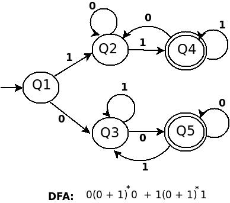
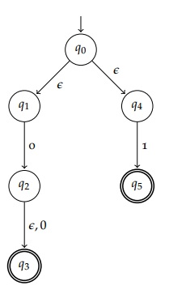

Assignment 2: Finite Automata (due Nov 11, noon)
Assignment specification, starter code, and sample tests considered complete.
Marking scheme posted
In CSC236, you learned about Deterministic and Nondeterministic Finite Automata, a simple model of computation that parse regular languages (which you might be more familiar with in the guise of regular expressions). Below is a simple example of a finite automaton (this one is deterministic).

A deterministic finite automaton consists of 5 parts:
- A set of states ({Q1, Q2, Q3, Q4, Q5})
- An set of symbols, called an alphabet ({0, 1})
- A transition function that determines the moves from one state to another (the arrows and their labels)
- An initial state (Q1)
- A set of final states ({Q4, Q5})
The difference between deterministic and nondeterministic finite automata is the following: in a DFA, for every state and symbol, there must be exactly one transition leading to another state; for NFAs, there could be 0 transitions or multiple transitions for a particular state-symbol pair. In other words, in a DFA the transition function takes a state and a symbol, and outputs a single state that is the new state after reading in the symbol at that state; in an NFA the transition function instead outputs a set of states, possibly empty, specifying which possible states the NFA could be in after reading in the symbol.
We say that a finite automaton accepts a string if, when starting at the initial state and reading in the symbols in the string, at least one of states the automaton could end up is a final state. Put another way, the only way an automaton will reject a string is if there is no way to get from the start state to a final state by reading in the symbols in the string.
For example, in the automaton above, the strings 00 (ends at Q5) and 111 (ends at Q4) are accepted, but 011 (ends at Q3) is rejected.
For a more in-depth refresher of finite automata, check your notes from CSC236, including pp. 68-70 and 73-74 of these notes.
Finite Automata in Haskell
Here are the provided starter files for this assignment:
As expected, the first thing we need to do in modeling finite automata in Haskell is to define the necessary types. To keep things simple, all states will be labelled with non-negative integers, and all symbols will be lowercase characters:
type State = Int
type Symbol = CharNote that because String is a type synonym of [Char], it is also a type synonym of [Symbol], and so we'll use this synonym extensively throughout the assignment when we want to talk about strings of characters.
A transition will be a triple (start, x, end), where start and end are states, and x is a symbol. This represents a transition from start to end upon reading the symbol x, i.e., an "arrow" in a DFA/NFA diagram.
type Transition = (State, Symbol, State)Finally, we'll represent sets with plain lists. Putting this together yields the following new type for finite automata; notice that we're not defining a type synonym, but a new data type with a single value constructor.
data Automaton = Automaton [State] [Symbol] [Transition] State [State]
-- Usage:
-- a = Automaton states alphabet transitions initial finalYou can assume that we'll always give you well-formed Automaton values, so you don't need to worry about error-checking. In particular, you can assume that the [State], [Symbol], and [Transition] arguments will not contain duplicates, as they really represent sets, not lists. This also holds for all other functions below that take [State], [Symbol], or [Transition] arguments. Similarly, when we ask you to return a set of states/symbols/transitions, your results must not contain any duplicates!
However, note that this type doesn't distinguish between DFAs and NFAs, so be careful when you proceed with the assignment, and you won't be able to rely on Haskell's type system to help you there.
Here is a simple example of a finite automaton in Haskell. Before proceeding, try drawing it, and determining the language it accepts (i.e., which strings it accepts). Is it deterministic or non-deterministic? How can you tell based on the transition table?
ex = Automaton [0,1,2]
['a','b']
[(0,'a',1),
(0,'b',2),
(1,'a',1),
(1,'b',1),
(1,'b',2)]
0
[0,2]Transitions
Let's start by computing with the transitions of our Automaton type.
Clarification: you're required to submit tests for these and all other required functions on MarkUs!
Write a function
tableToDelta :: [Transition] -> State -> Symbol -> [State], which takes as input a set of transitions, and outputs the transition function corresponding to the transitions.Note that the transition function has type
State -> Symbol -> [State]: it takes as input aStateandSymbol, and outputs the set of all possibleStates the automaton could be in after reading in the given symbol from the given state. In the deterministic case, the output set always has size 1, but in general, the output's size could be 0 or be very large.The transition function should output the states in ascending order (remember, we represent states as integers), and should not contain any duplicates!
Your next task is to write a function
extend :: (State -> Symbol -> [State]) -> (State -> String -> [State])which takes a transition function and outputs the corresponding extended transition function.Recall that the extended transition function has the same purpose as the transition function, except its second argument is a string of symbols rather than just a single symbol; its output is a list of states that the automaton could be in when starting from the the input state and after reading in the symbols in the order provided in the input string. Note that for a DFA, the output list still only has size 1.
Again, your extended transition function should output its set of states in ascending order, and not contain duplicates.
Here's an aside that's tougher: write a function
allStrings :: [Symbol] -> [[String]], which does the following:- Take as input a set of symbols of size k ≥ 1 (no duplicates)
- Outputs an infinite list, where the n-th item in the list is a list of all kn strings of length n that can be made from the symbols in the input set, in alphabetical order
Note that the output list is 0-indexed, so the first element should always be
[""].Putting things together, write a function
possibleOutcomes :: Automaton -> State -> [[(String, [State])]]which does the following:- Take as input an automaton and a state q in that automaton
Output an infinite list, where the n-th element is:
- a list of tuples
(string,states) :: (String, [State])wherestringhas length n, andstatesis a list of possible states the automaton could be in when starting at state q and reading in the symbols instring.statesmust be in ascending order, and contain no duplicates.
- a list of tuples
All possible strings of length n consisting of symbols in the automaton's alphabet must appear the list of tuples, and the tuples should be sorted in alphabetical order by their corresponding strings.
You must make use of previous question parts to accomplish this. But if you do this correctly, you'll find that this question is quite short!
ex = Automaton [0,1,2] ['a','b'] [(0,'a',1), (0,'b',2), (1,'a',1), (1,'b',1), (1,'b',2)] 0 [0,2] > let out = possibleOutcomes ex 1 > out !! 2 [('aa',[1]),('ab',[1,2]),('ba',[1]),('bb',[1,2])]
Acceptance
Now let's get to the interesting part: using finite automata to accept and reject languages.
Write a function
accept :: Automaton -> String -> Boolthat returnsTrueif and only if the automaton accepts the string (assume the string contains valid symbols for the automaton).Then write a function
language :: Automaton -> [String], which takes an automaton, and returns a (possibly infinite) list of strings which are accepted by the input automaton. These strings must appear in the following order:- For all n, all accepted strings of length n must appear before all accepted strings of length n + 1.
- For all n, all accepted strings of length n must appear in alphabetical order.
Don't worry about distinguishing between finite and infinite languages just yet - see the next section.
Finiteness
One interesting thing about our computation on finite automata so far is that we haven't really distinguished between automata recognizing finite vs. infinite languages. For example, suppose we had the following simple DFA:
finite = Automaton [0,1] ['a'] [(0,'a',1)] 0 [1]This only accepts the string "a", and rejects all other strings. However, it is likely that if you implemented language naively, you'll get an infinite loop if you try to evaluate language finite, or check whether a string other than "a" is accepted by finite.
Let's address this problem.
Useless states
A state q in an automaton with n states is useful if there exists a string of symbols of length at most n that can be read to transition from q to a final state. Otherwise, the state q is useless. (Note that every final state is useful.)
Write a function
removeUseless :: Automaton -> Automatonthat takes an automaton and returns a new one, which is the same as the input, except all of the useless states have been removed. Note that the useless states should be removed from both the set of states and the set of transitions.You may assume that the start state is always useful.
Note: of course, removing useless states does not affect the language that an automaton accepts.
The order of the remaining states and transitions must not be changed!
Identifying finiteness
Now we can use this property of finite automata with no useless states: a finite automaton A with n states, and no useless states, accepts a finite language if and only if no state is reached when reading a string of length n + 1 (starting at the start state).
Write a function
isFiniteLanguage :: Automaton -> Boolthat returnsTrueif and only if the input automaton accepts a finite language. Note that you may not assume that the input automaton has no useless states.Last but not least, write a function
language' :: Automaton -> [String]that returns the language accepted by an automaton (same aslanguage), except that if the corresponding language is finite,language'is guaranteed to evaluate to a finite list.
Epsilon-Transitions
Recall that an epsilon-transition (ε-transition) is a transition in an automaton that can be made at any time, without reading in a letter. This is another instance of non-determinism; if the current state is one with an ε-transition leading out of it, the automaton can choose whether or not to use it before reading in the next letter of the string.
For example, the following NFA accepts the string "0"; it first takes the transition from q0 to q1, then reads the 0 to go to q2, then takes another transition from q2 to q3, ending at a final state.

To add support for ε-transitions to our program, we must be able to handle this type of transition happening at any time, independent of "reading the next letter in the string." Luckily, a very simple idea is all we need!
Epsilon Closures
For a given set of states S in an NFA, its epsilon closure is the set of all states reachable from the states in S using only ε-transitions. For example, in the NFA above, the epsilon closure of {q0} is {q0, q1, q4}, and the epsilon closure of {q2, q4} is {q2, q3, q4}.
Even though this example doesn't show it, more than one ε-transition can be taken when computing the epsilon closure. For example, if we replaced the transtion from q1 to q2 with an ε-transition, the epsilon closure of {q0} would be {q0, q1, q2, q3, q4}.
Also note that for an automaton with no ε-transitions, the epsilon closure of a set of states is just that set of states.
For this question and this question only, a Transition can have the form (x,' ',y), where the space character represents an ε.
Implement the function
epsilonClosure :: Automaton -> [State] -> [State], which takes an automaton and a set of states (no duplicates), and returns the epsilon closure of the set of states in that automaton.The output set of states must be in ascending order. Of course, there shouldn't be duplicates.
Note: this is a trickier question, which is why I put it at the end. The simlpest algorithm involves explicit recursion, just be careful not to get into an infinite recursion situation.
Wrap-up (optional)
Believe it or not, now that you have epsilonClosure, you can simply use this function in all of your other functions from this assignment, and they should all work with automata containing ε-transitions!
While we won't be testing this at all, it might be fun to do if you have time; and since epsilonClosure should act as the identity function when there are no ε-transitions, even if you modify your original functions, they'll be "backwards-compatible" with our tests. Yay!